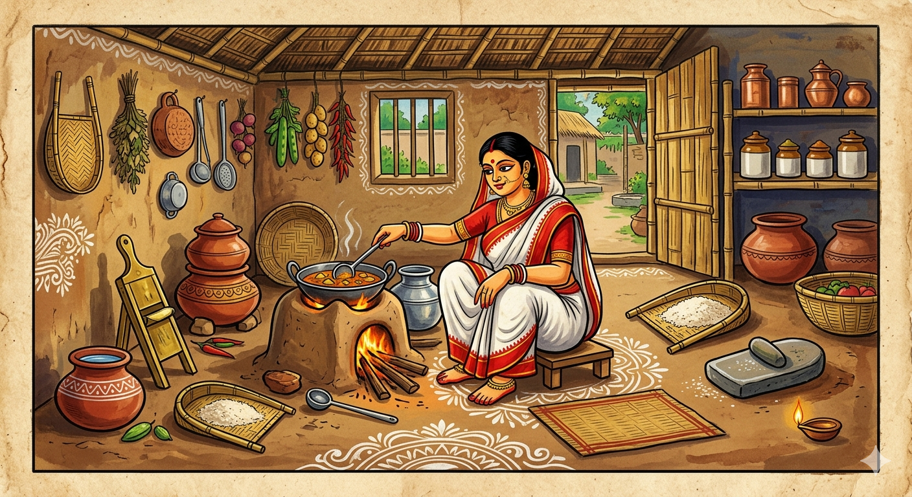
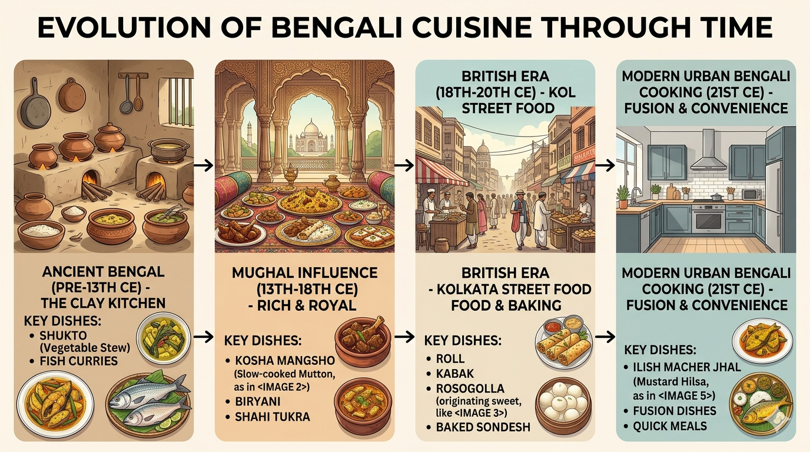
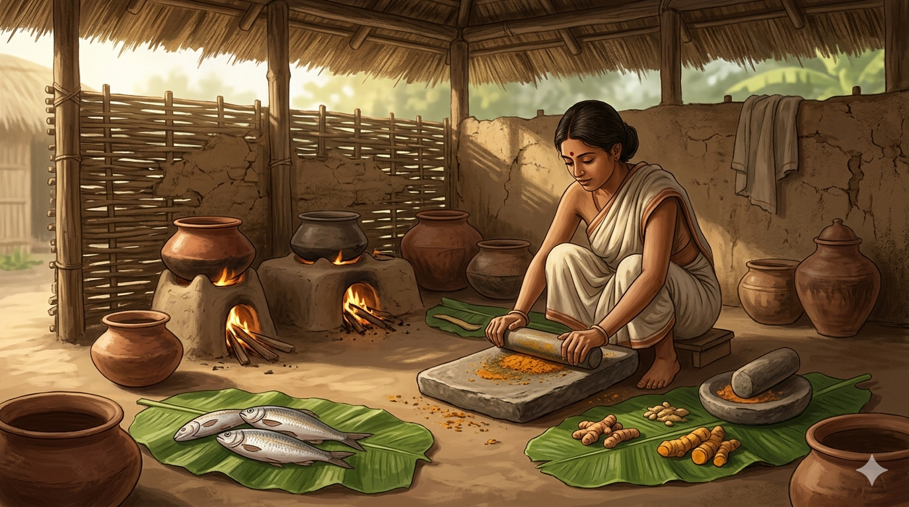
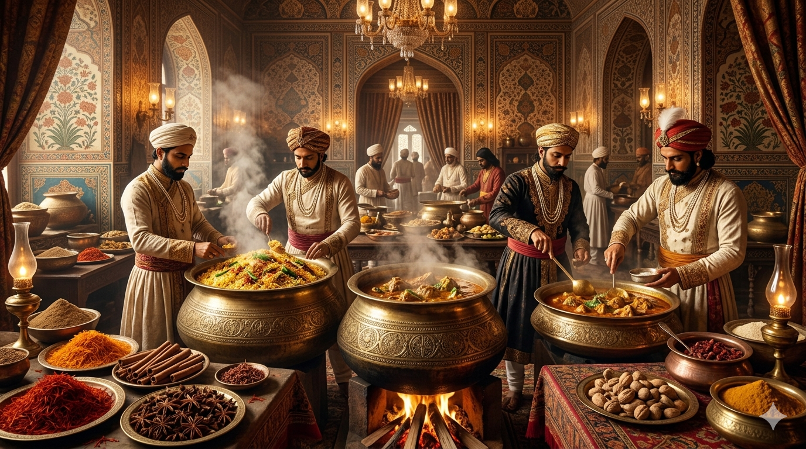

The Heart of Bengali Cooking
Bengali cuisine is more than just food — it is emotion, nostalgia, and the warmth of a home kitchen. Every dish carries the memory of generations, from the slow-cooked curries of ancestral villages to the vibrant streets of the city.

Spices are not just ingredients here; they are storytellers. The crackle of mustard oil, the rhythmic shil-nora (grinding stone) at dawn, and the aroma of panch phoron define a culture that celebrates the seasons on a plate.
The Art of Traditional Cooking
Before modern kitchens, the "Heshel" was a sacred space of clay ovens and hand-ground spices. The artistry lay in the patience of the cook — slow-roasting masalas until they deepened into a dark, rich brown, and using fish fresh from the village ponds.

We preserve this craftsmanship, using techniques passed down through grandmother's secrets to bring the true soul of Bengal to your table.
A Legacy of Regal Influence
The Bengali plate is a tapestry woven from many threads. From the sophisticated Mughal and Nawabi feasts that introduced rich gravies and biriyanis, to the European influences that shaped our baking and street food, each era left an indelible mark.

“Heshel Ghor” brings this diversity together, offering a balanced menu that reflects the true, multi-layered culinary heritage of the region.
A Culinary Evolution
From the ancient clay pots of the pre-13th century to the modern, time-saving kitchens of today, the essence of Bengali cooking has remained constant: balanced, soulful, and full of character.

“Heshel Ghor” is our tribute to this evolution — a bridge between the nostalgia of the past and the convenience of the present.